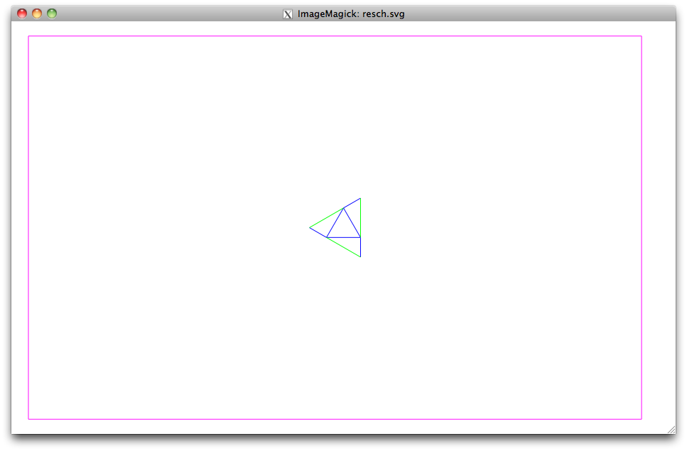

6.849: geometric folding algorithms
My research group, the Center for Bits and Atoms, spends a fair bit of research time rethinking the computer aided design process. One of the products of this is the fab modules, a set of software tools, scripts, and machine drivers bundled under a common GUI. The major included design tool, Kokopelli, is based on volume representations of objects. While this greatly simplifies the design of many things, it is not ideal for creating crease patterns. For designing inherently one-dimensional objects, we need another entry point to the fab modules.
To this end, I wrote some lightweight python classes to script the generation of SVG files. The snippet below shows the setup for one of Ron Resch's patterns in this framework. First we import the shape library and set some global values for the pattern. Then we create a Scene object with a Layer for mountain folds, valley folds, and cuts.
#!/usr/bin/env python
from shapes import *
#Ron Resch tesselation
l = .5 #triangle circumradius
n = 6 #twice number in height
m = 6 #twice number in width
scene = Scene('resch',3*(m+.5)*l,sqrt(3)*(n+1)*l,'in',.01)
mountain = Layer('mountain',(0,0,255),scene)
cut = Layer('cut',(255,0,255),scene)
valley = Layer('valley',(0,255,0),scene)
Now we can begin to create geometry. I define three points and create creases between them. This will be the base of our pattern.
p0 = l*array([-1., 0.])
p1 = l*array([0., sqrt(3)/3.])
p2 = l*array([-1/2., -sqrt(3)/6.])
lin0 = Line(p0,p1)
lin1 = Line(p1,p2)
lin2 = Line(p0,p2)
g = Group({lin0:valley,lin1:mountain,lin2:mountain})
scene.add_group(g)
This code generates the output on the left:
|  |
To create the full pattern, we write geometric transformations of this geometry. The sequence of snapshots show the output from each subsequent transformation in the snippet:
g = g.rotates([0,0],2*pi*arange(3)/3.)
g = g.mirror(p0,p1-p0,copy=True)
g = g.mirror([.5*l,0],[0,1],copy=True)
tn = sqrt(3)*l*(arange(n)-n/2+.25).reshape(1,-1,1)*array([[0,1]])
tm = 3*l*(arange(m)-m/2+.25).reshape(-1,1,1)*array([[1,0]])
g = g.translate((tn+tm).reshape(-1,2))
It's easy to define additional functions and classes on top of this basic framework. The image at the top shows a mask derived from this crease pattern used in my Expancel experiments. The python source, this Resch script, as well as several other example scripts are available at the project page on Github. Below is the output for some other examples: